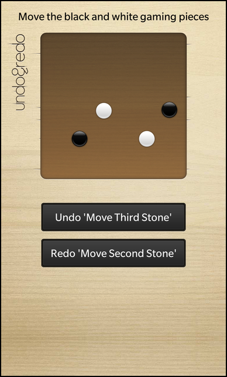

Files:
The Undo Framework example shows how to implement undo/redo functionality with the Qt undo framework.

In this example we'll learn how to use the QUndoCommand and QUndoStack classes to track user actions and allow to undo and redo them. The user can move gaming pieces on a board, where each move will be tracked, and then undo and redo the single moves by clicking the 'Undo' and 'Redo' buttons.
In the Qt undo framework, all actions that the user performs are implemented in classes that inherit QUndoCommand. An undo command class knows how to both redo() - or just do the first time - and undo() an action. For each action the user performs, a command is placed on a QUndoStack. Since the stack contains all commands executed (stacked in chronological order) on the document, it can roll the state of the document backwards and forwards by undoing and redoing its commands. See the overview document for a high-level introduction to the undo framework.
The UI of this sample application consists of a game board, where the movable gaming pieces are located on, and two buttons, one to undo a move and one to redo a move.
The business logic of the application is encapsulated in the class UndoManager, which is exported to the UI as '_undoManager'.
Inside the main.qml the game board is instantiated (the implementation is located in Board.qml)
// The board Board { horizontalAlignment: HorizontalAlignment.Center layoutProperties: StackLayoutProperties { spaceQuota: 1 } }
and the two buttons
Button { preferredWidth: 500 text: _undoManager.undoText == "" ? qsTr ("Undo") : qsTr ("Undo '%1'").arg(_undoManager.undoText) enabled: _undoManager.canUndo onClicked: _undoManager.undo() } Button { preferredWidth: 500 text: _undoManager.redoText == "" ? qsTr ("Redo") : qsTr ("Redo '%1'").arg(_undoManager.redoText) enabled: _undoManager.canRedo onClicked: _undoManager.redo() }
Whenever the user clicks the 'Undo' or 'Redo' button, the undo() and redo() slots of the UndoManager object are invoked. The state of the buttons depends on the 'canUndo' and 'canRedo' properties of the UndoManager, which reflect whether there are undo commands located on the internal QUndoStack. The text of the buttons is adapted to the title of the undo command that is currently located on the internal QUndoStack.
Stone { id: firstStone layoutProperties: AbsoluteLayoutProperties { positionX: 102 positionY: 102 } color: "white" title: qsTr ("First Stone") onMoved: _undoManager.createMoveCommand(firstStone, sourceX, sourceY, targetX, targetY) }
The Board.qml contains a Container with four Stone elements (implemented inside Stone.qml) inside an AbsoluteLayout. The Stone object provides a signal moved() which is emitted whenever the user moves the Stone object on the screen.
// This signal is emitted after each move operation signal moved(int sourceX, int sourceY, int targetX, int targetY)
We implement a signal handler here that invokes the createMoveCommand() slot of the UndoManager object and passes the five parameters
The UndoManager object uses these information to push a new undo command on the internal QUndoStack.
The MoveCommand represents one move action the user has done. It inherits from QUndoCommand and reimplements the virtual methods undo() and redo(). Additionally it stores the Stone object that should be moved, the title of this action and the source and target position.
class MoveCommand : public QUndoCommand { public: // Pass all parameters that the command need to fulfill its task in the constructor MoveCommand(bb::cascades::Control *control, const QPoint &source, const QPoint &target, QUndoCommand *parent = 0); virtual void redo(); virtual void undo(); private: // The (Stone) control that should be moved bb::cascades::Control *m_control; // The start and end point of the move operation in local coordinates QPoint m_sourcePoint; QPoint m_targetPoint; };
Inside the constructor of MoveCommand we retrieve the title property of the associated Stone object and set it as the description text for this command.
MoveCommand::MoveCommand(Control *control, const QPoint &source, const QPoint &target, QUndoCommand *parent) : QUndoCommand(parent) , m_control(control) , m_sourcePoint(source) , m_targetPoint(target) { // Extract the title property that has been set on the Stone control in the QML file const QString title = m_control->property("title").toString(); /** * Set a meaningful text for this command. This text will be used by QUndoStack::undoText() and QUndoStack::redoText() * when this command is on the top of the stack. */ setText(QString("Move %1").arg(title)); }
The implementation of the undo() method just changes the x and y coordinates of the Stone object back to the source position.
void MoveCommand::undo() { /** * This method is called when the user triggers the undo of a command. * We simply retrieve the AbsoluteLayoutProperties object of our Stone control and * set it back to its source position. */ AbsoluteLayoutProperties *properties = qobject_cast<AbsoluteLayoutProperties*>(m_control->layoutProperties()); if (properties) { properties->setPositionX(m_sourcePoint.x()); properties->setPositionY(m_sourcePoint.y()); } }
The implementation of the redo() method changes the x and y coordinates of the Stone object back to the target position.
void MoveCommand::redo() { /** * This method is called when the user triggers the redo of a command. * We simply retrieve the AbsoluteLayoutProperties object of our Stone control and * set it to the target position. */ AbsoluteLayoutProperties *properties = qobject_cast<AbsoluteLayoutProperties*>(m_control->layoutProperties()); if (properties) { properties->setPositionX(m_targetPoint.x()); properties->setPositionY(m_targetPoint.y()); } }
The UndoManager is a thin wrapper around the QUndoStack class. It provides a convenience method to push a new MoveCommand on the stack and it makes all the state information of the stack available to the UI via properties.
UndoManager::UndoManager(QObject *parent) : QObject(parent) , m_undoStack(new QUndoStack(this)) { // We connect the signals from the QUndoStack directly to our own signals ... connect(m_undoStack, SIGNAL(canRedoChanged(bool)), this, SIGNAL(canRedoChanged())); connect(m_undoStack, SIGNAL(canUndoChanged(bool)), this, SIGNAL(canUndoChanged())); connect(m_undoStack, SIGNAL(redoTextChanged(QString)), this, SIGNAL(redoTextChanged())); connect(m_undoStack, SIGNAL(undoTextChanged(QString)), this, SIGNAL(undoTextChanged())); }
Inside the constructor of UndoManager, the internal QUndoStack object is allocated and the state change notification signals of the stack are forwarded to the change notification signals of the UndoManager's properties.
bool UndoManager::canRedo() const { // ... and also just forward the getter methods to the QUndoStack return m_undoStack->canRedo(); }
The accessor methods of UndoManager's properties just forward the calls to the appropriated methods of QUndoStack
void UndoManager::redo() { m_undoStack->redo(); }
The undo() and redo() slots of the UndoManager object also just call the undo() and redo() methods of the QUndoStack.
void UndoManager::createMoveCommand(bb::cascades::Control *control, int sourceX, int sourceY, int targetX, int targetY) { /** * We simply create a new instance of a MoveCommand, pass all needed data to its constructor and push * it on the QUndoStack. * The stack will take ownership of the command object, and will delete it when it's no longer used. */ m_undoStack->push(new MoveCommand(control, QPoint(sourceX, sourceY), QPoint(targetX, targetY))); }
The createMoveCommand() method of the UndoManager creates a new MoveCommand object, passes in the parameters it received from the call in the QML file, and pushes the object onto the QUndoStack. The stack takes ownership of the command and will delete it when it is no longer needed.